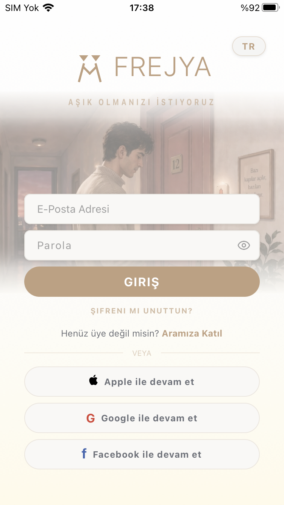
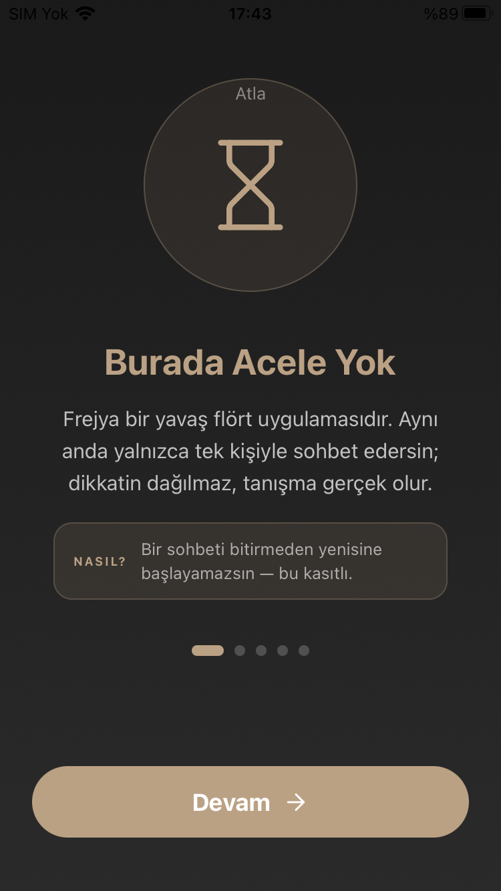

Uygulamadan
Frejya'nın içinden kareler

Aşkın eşiğindeGiriş ekranı

Acelesi yokOnboarding

Bir kapı, bir misafirSohbet
Aşkın eşiğinde
Hızlı kaydırma yok. Anonim tanış, sohbet ettikçe karşındakini gerçekten keşfet. Frejya'da bir bağ kurmak zaman ister — ve buna değer.
İlk 1000 kişiye 3 ay premium hediye.
Hediyeyi almak için aşağıya bilgilerini bırak.


Bir zamanlar bir insanı tanımak, mevsimler alırdı.
Şimdi bir saniye. Bir fotoğraf. Bir parmak kaydırması.
Biz buna inanmıyoruz.
Hızlı beğenilenin hızlı unutulduğuna,
tanınmadan sevilenin sevilmediğine,
ve bir yüzün bir insanı asla anlatmadığına inanıyoruz.
Frejya bir flört uygulaması değildir.
Frejya, bir kapı eşiğidir.
Burada yüzler bir anda görünmez.
Çünkü bir insan, bir fotoğraftan büyüktür.
Konuştukça tanırsın. Tanıdıkça görürsün.
Gördükçe kalırsın — ya da gidersin.
Ama bu kez, bilerek.
Diğerleri seni acele ettirir.
Diğerleri seni bir fotoğrafta yargılatır.
Diğerleri sana onlarca seçenek sunar — ama hiçbirini tanıma fırsatı vermez.
Frejya, sana zaman tanır.
Çünkü zili çalmak kolaydır.
İçeri davet edilmek, bambaşka bir şeydir.
Burada anlık beğeni yok.
Burada sahte profil, kurgu hayat, oyuna gelen kalp yok.
Burada acele yok.
Burada bir kapı var —
ve doğru anahtar bulunduğunda,
yavaşça, açılacak.
Çünkü artık bir gece değil, bir sabah arıyoruz.
Bir kahve fincanının iki yanı.
Bir anahtarın iki sahibi.
Bir evin içindeki iki nefes.
Eğer sen de yorulduysan
hızlı olandan, yüzeysel olandan, sahte olandan —
hoş geldin.
Burada bir yuva kurulur,
bir oyun değil.
Frejya. Aşkın eşiğinde.
Profilini bir biyografi değil, psikolojik derinlik testi anlatır. Kendini bir hayvan avatarı, takma ad ve maskelenmiş bir ses tonuyla tanıtırsın.
Eşleştiğin kişinin fotoğrafı karanlık bir perdenin arkasında. Karşılıklı sohbet ettikçe perdeyi azar azar kazıyıp onu ortaya çıkarırsın.
Frejya'da aynı anda yalnızca bir kişiyle sohbet edersin. Dikkat dağınıklığı yok — karşındaki kişiye gerçekten odaklanırsın.
Akışta metin yoktur. Düşünceni ikonlardan oluşan sembolik bir dille paylaşırsın. Frejya Aura — sessiz ama anlamlı bir alan.
Birini beğendiysen kapısının zilini çalarsın. O da senin zilini duyar — ve dilerse kapıyı açar.
Her profil fotoğrafı yapay zekâ ile denetlenir. Şikayet ve engelleme her an elinin altında. İstediğin an hesabını tamamen silebilirsin.
Derinlik testini çöz, ruhani hayvan avatarını seç, sesini bir perdeyle tanıt.
Keşfet ekranında biriyle eşleş, kapısının zilini çal. Kabul ederse sohbet açılır.
Sohbet ettikçe perdeyi kazı; emek verdikçe karşındaki kişi ortaya çıkar.
Evet, Frejya'yı ücretsiz kullanabilirsin. İleride bazı ek özellikler için isteğe bağlı premium üyelik sunulabilir.
Eşleştiğin kişinin fotoğrafı başta gizlidir. Karşılıklı sohbet ettikçe perde yavaşça açılır — tanıştıkça görürsün.
Başta bir hayvan avatarı, takma ad ve maskelenmiş ses tonuyla tanışırsın. Gerçek fotoğrafın yalnızca sohbetle açılır.
Mesajlar uçtan uca şifrelenir; Frejya ekibi dahil kimse içeriği okuyamaz. Tüm profil fotoğrafları yapay zekâ ile denetlenir.
Frejya yalnızca 18 yaş ve üzeri içindir.
Aynı anda yalnızca bir kişiyle — böylece karşındaki kişiye gerçekten odaklanırsın.
Derin bağlar zamanla kurulur. Frejya 18 yaş ve üzeri içindir.